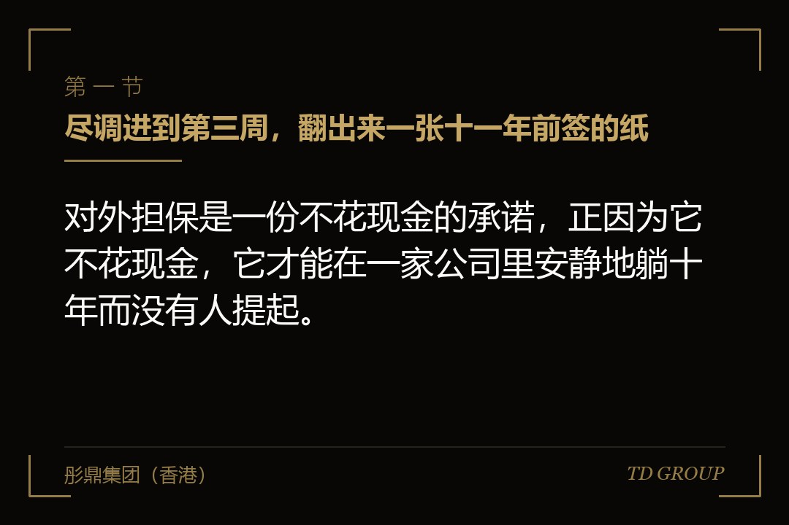
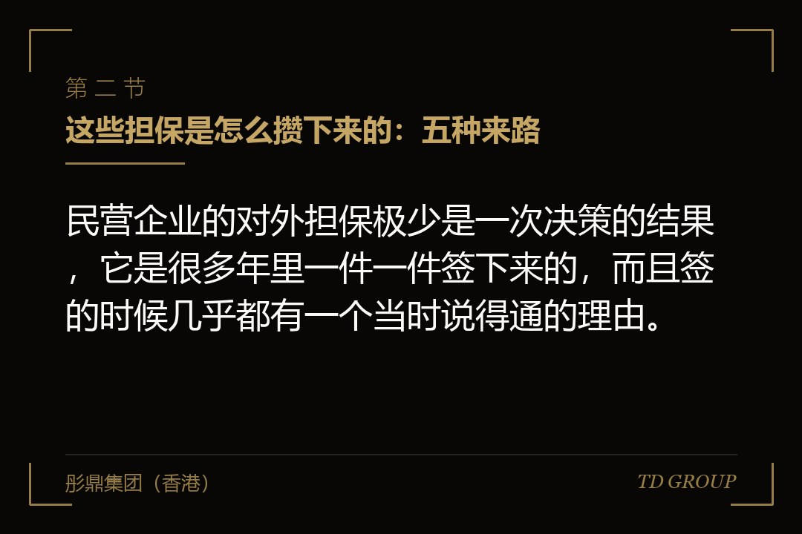
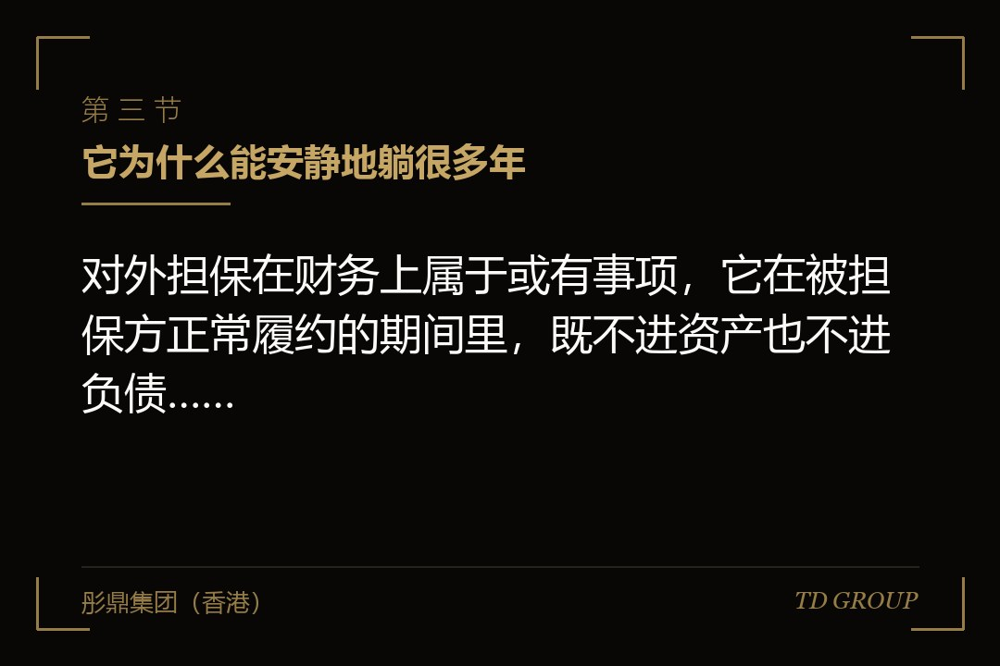

一、尽调进到第三周，翻出来一张十一年前签的纸

结论先行：对外担保是一份不花现金的承诺，正因为它不花现金，它才能在一家公司里安静地躺十年而没有人提起。一家做汽车零部件加工的企业，在某一轮股权融资推进到尽调第三周的时候，被投资人的律师从银行调档里翻出来一份保证合同——签署日期是十一年前，签字的是创始人本人，盖的是公司的章，被保证的是一家做建材的公司，那家公司的老板是创始人多年的朋友。
创始人的头一个反应是：那件事早就过去了。他记得当年那笔借款是三年期，朋友那边一直还得很正常，后来自己也就再没想起过。
律师把银行的授信档案摊开给他看：那笔借款在三年后办了展期，展期之后又续过两次，主债务的金额从最初的数目降到了一半左右，但一直没有还清；而当年那份保证合同里写着，保证的范围及于主合同项下债务的展期与变更，保证期间按主债务履行期届满之日重新起算。也就是说，这张纸从来没有失效过，它跟着那笔借款一路续到了今天，只是没有人通知过他。
接下来的两周，事情朝着创始人完全没有预料的方向走。投资人把"完成全部对外担保的清理并取得债权人的书面解除文件"写进了交割的先决条件，措辞里没有留任何"尽力"之类的余地。
企业方去找那家建材公司，对方的态度很配合也很无奈：不是不想还，是这两年回款慢，一次性还清确实拿不出来。企业方再去找银行，银行的经办人说这个事他做不了主，要走审批，而更换保证人意味着要重新做一次授信评审，评审通不通得过、要多久，谁也不敢给一个日子。
最后这一轮融资的交割，比原定的时间晚了将近五个月，中间投资人两次要求调整估值的口径，理由都很正当——时间拖了，公司的经营数据也变了。
这件事里最值得记住的不是那五个月，而是创始人后来说的一句话：如果早两年有人问过他"公司名下和你个人名下现在还有几张担保没解掉"，他其实答不上来。他不是在隐瞒什么，是他真的没有那份清单。
这里要先把一件事区分开，因为这两件事在很多企业里被混着谈，处理方式却完全不同。关联方资金占用讲的是钱已经从公司出去了，账上有一笔挂着的往来，清理的动作是把钱还回来、把通道关掉，那是另外一个独立的话题，本文不展开。
对外担保讲的是钱一分没出去，出去的是责任——公司的现金流没有任何变化，报表主表上看不出任何异常，但公司已经站在了另一笔债务的后面。前者是账上有一个洞，后者是账上什么都没有、外面挂着一个钩子。本文只讲后者。
同样地，有些担保用的担保物是股东手里持有的股权，那会牵扯出质押本身的一整套问题，是另一个独立话题，此处不展开；对外担保如果发生在关联方之间，还会同时触及关联交易与独立性的判断，那也各有各的处理口径，本文只在必要处提一句，不做展开。
二、这些担保是怎么攒下来的：五种来路

结论先行：民营企业的对外担保极少是一次决策的结果，它是很多年里一件一件签下来的，而且签的时候几乎都有一个当时说得通的理由。
来路之一是朋友之间的互保。两家企业的老板关系好，各自要向银行借款，银行要求提供保证人，于是互相给对方做保证——这是最常见也最没有防备的一种。它在签的当天看起来是对等的：我给你保，你给我保，双方都不掏钱，都拿到了自己要的授信。问题在于，对等的只是形式，风险从来不对等——你了解自己企业的经营，但你对朋友那家企业的真实情况，掌握的往往只是他自己说的那些。
来路之二是行业里的连环保和担保圈。在一些制造业集中的产业带，同一个园区、同一条产业链上的几家企业彼此交叉担保，甲保乙、乙保丙、丙又保回甲，形成一个圈。一家做建筑装饰工程的企业曾经身处这样一个四家企业的圈子里，四家彼此都提供过保证，日常经营各不相干。
后来其中一家的项目款出了问题，无力偿还到期借款，债权人依约向其余三家主张责任；而这三家在同一家银行也有自己的授信，银行在评估之后收紧了对这个圈子的整体敞口。
那家装饰工程企业当年经营正常、利润正常，却在半年之内先后经历了自己的授信额度被压缩、新增贷款审批变慢、以及被债权人列为共同被告。它自己什么都没做错。
来路之三是给上下游做的担保。一家做农产品初加工的企业，为了让区域经销商能拿到备货所需的资金，给几家长期合作的经销商提供了保证，理由非常实在——经销商拿得到钱，就能多备货，多备货企业自己的出货量就上去了。这类担保有一个共同的特点：它在商业上是有回报的，所以它更容易被批准，也更容易在业务顺利的年份里一签再签，越积越多。
来路之四是给老板自己控制的其他企业做的担保。老板名下往往不止一家公司，有做贸易的、有做地产的、有当年为了某个项目单独设的。当其中一家需要融资而资质不够时，用经营得最扎实的那家去做保证，几乎是本能反应。这一类的麻烦在于，它同时是对外担保、又是关联担保，投资人和审计师看到它的时候，问的问题会比普通担保多一层：决策程序走了没有、有没有对价、其他股东知不知情。
来路之五，也是最容易被漏掉的一类：老板以公司名义签下的、公司账上完全没有记录的担保。一家做精密模具的企业在梳理的时候发现，创始人几年前用公司的章为一位朋友的个人借款出具过保证，公司没有股东会决议，没有董事会决议，财务部门不知道，附注里当然也没有。
它不出现在任何一份内部资料里，直到债权人拿着那张纸找上门。这一类之所以危险，不是因为金额一定大，而是因为它在企业自己的清单上根本不存在——你没法清理一件你不知道它存在的事。
把这五类放在一起看，会发现它们有一个共同的成因：签的时候，签字这个动作本身不产生任何当期支出，也不需要经过任何一道会让人停下来算账的流程。
三、它为什么能安静地躺很多年

结论先行：对外担保在财务上属于或有事项，它在被担保方正常履约的期间里，既不进资产也不进负债，因此它天然地不出现在企业主每个月看的那几张表上。
企业主每个月看的通常是收入、毛利、费用、现金、应收和存货。这几项里没有一项会因为公司在外面挂着一张保证而发生变化。担保的经济后果是条件性的——只有在债务人不履行的时候，责任才会转化为现实的支出。在此之前，它的位置是报表附注里的或有事项，而附注这个东西，在很多非上市的民营企业里做得相当粗糙，甚至存在因为业务部门没有把合同交给财务、财务根本不知道有这笔担保而完全遗漏的情况。
于是就形成了一个很典型的错觉：签的时候不花钱，签完之后每年也不花钱，年复一年地不花钱，人就会真的以为它不存在。有位企业主说过一句挺贴切的话——那些年他觉得给朋友签个保证跟写个推荐信差不多，都是帮忙，都是一句话的事。这个感受不能说完全没道理，因为在被担保方一路正常还款的那些年里，它的表现确实和一封推荐信一模一样。
第二个原因是时间的错配。保证责任的存续时间往往远长于企业主的记忆。主债务展期、续贷、借新还旧，保证很可能跟着一路延续下去，而这些动作发生在债权人和债务人之间，担保人未必每一次都被正式通知到。前面那家汽车零部件企业就是这样：他记忆里是一笔三年期的借款，实际上那份责任已经跟了十一年。
第三个原因是决策程序的缺位。在管理规范的公司里，对外担保是要经过内部审批的重大事项，有金额门槛、有决策层级、有回避规则。而在很多民营企业的实际运作中，这件事就是老板签个字、盖个章。程序缺位带来的不只是"批得太随意"，更要命的是它同时也让这件事没有留下台账——没有走流程，就没有记录；没有记录，几年之后连自己都查不到。
这三个原因合起来，解释了一个在尽调现场反复出现的场面：企业主是真心实意地说"我们没有对外担保"，而律师是从银行的档案、从被担保方的诉讼记录、从工商登记的抵押信息里，一张一张翻出来的。这不是诚信问题，是台账问题。
四、它在哪几个时点突然显形
结论先行：这件事从来不是企业自己发现的，它的显形时点由外部的四件事决定，而这四件事的共同特点是——发生的时候，企业往往正处在最需要它不发生的阶段。
触发点之一是投资人进场做尽调。这是最"温和"的一种显形方式，因为它至少发生在企业还健康、还有谈判余地的时候。
投资人的法律尽调会做几件很程式化的事：查工商登记与抵押质押登记、调阅公司全部的借款与担保合同、检索企业和实际控制人作为当事人的诉讼与执行信息、以及要求管理层出具一份对外担保的书面确认。
头三件是客观检索，第四件是让你自己说——而当客观检索的结果和你自己说的对不上的时候，问题就不只是那张担保了，还多了一层"管理层对自身情况掌握程度"的判断。
触发点之二是审计师的系统性核查。审计过程中会向银行发函确认，函证的内容通常同时包含存款、借款以及为他人提供担保的情况。银行回函是照着自己的系统填的，它不会因为企业没记就不写。一家做医疗器械流通的企业，多年来一直觉得自己给老板另一家公司提供的那笔保证是"家里的事"，直到银行回函上白纸黑字列出来，审计师要求就此事在附注中充分披露，并进一步询问该项担保的决策程序与是否收取对价。
触发点之三，也是杀伤力最直接的一种：被担保方那边先出事。一家做纺织印染的企业遇到过这种情形——它当年为一家关系不错的同行提供了保证，那家同行后来因为经营困难无法清偿到期债务、进入了破产重整程序。
债权人没有等，直接依据保证合同向这家印染企业主张责任并申请了财产保全，企业的一个基本账户被冻结了一段时间。要注意这里的顺序：担保人被主张责任，不以先向债务人穷尽追偿为前提——在连带责任保证的约定下，债权人可以直接找担保人。
企业当时并没有资金上的困难，困难在于账户被冻结之后，采购付款、工资发放、供应商的信心，全部在同一个星期里出了问题。
触发点之四是银行在一个圈子里整体收缩。前面那家建筑装饰工程企业属于这一类。这一类的特殊之处在于，它不需要你自己出事，也不需要你的直接被担保方出事，只要这个圈子里出现了风险信号，你的授信条件就可能被调整。企业方在这种情形下会体会到一种很强的无力感：你能解释的只有自己的经营，而对方在评估的是整个网络。
这四个触发点里，只有头一个是可以提前预判的——因为融资是企业自己启动的。这也是本文最想说的那件事：能选择的时点只有这一个，所以清理必须发生在启动融资之前，而不是尽调开始之后。
五、杀伤落在哪里：从附注里的一行字到控制权
结论先行：对外担保的代价不是一笔钱，而是它同时作用在四个位置——报表与审计、交易的先决条件、企业主个人的名下财产、以及企业在压力下的谈判地位。
落点之一在报表与审计。或有负债的规范处理是按事项的可能性作出相应的会计处理与披露：可能性达到一定程度的要计提，未达到的要在附注中披露，包括担保的性质、金额、以及可能产生的财务影响。
这件事本身并不可怕，可怕的是两种偏离——一种是根本没披露，一种是披露了但说不清楚金额和期限。当担保金额相对于企业净资产而言比较重、同时被担保方的偿债能力又存在明显不确定性的时候，审计师就必须在意见类型上作出自己的判断。一份不干净的审计意见对融资意味着什么，企业主通常不需要别人解释。
落点之二在交易的先决条件。投资人在条款清单和后续的正式文件里，会把对外担保的清理写成交割的前提，措辞通常是明确的：在交割日之前解除全部对外担保，并向投资方提交债权人出具的书面解除文件。
这一条几乎没有讨价还价的空间，原因很直接——投资人的钱进来之后成为公司的资产，而一张在外的保证意味着这笔资产可能被拿去替别人还债。
企业方偶尔会尝试用"承诺在交割后X个月内完成"来换取先交割，实践中投资方即使同意，也往往会附加一个补偿或者调价的安排，把风险折回给创始人一侧。
落点之三在企业主个人。这一点是很多人真正低估的地方。对外担保如果同时有创始人个人的连带责任保证——在民营企业的银行融资中这非常普遍——那么一旦责任兑现，债权人可以直接向创始人个人主张，进而涉及其名下的财产，包括他所持有的公司股权。而股权一旦被采取强制措施，公司的股权结构就不再由企业自己掌握了。
落点之四是最隐蔽的一层：谈判地位。当一家企业因为担保代偿而突然出现资金缺口的时候，它去融资的姿态和平时是完全不同的。一家电子元器件分销企业的创始人描述过那段经历——他在那三个月里见的每一位投资人，头一个问题都是"这笔钱是用来干什么的"，而他没法说别的。急着要钱这件事本身，就是对方在估值和条款上的筹码。这与它在财务上到底损失了多少并没有必然关系，它损失的是可以说"我不着急"的资格。
需要补充一句的是，如果企业后续还打算走向公开市场，这一档的标准会比股权融资严格得多——那一侧关注的不只是担保清没清完，还包括形成担保的决策程序、报告期内是否反复发生、以及内部控制有没有被真正修好。但那是更严的一档，不是本文的主线；对绝大多数企业主来说，先把它对下一轮融资的影响处理干净，已经足够。
六、清理有哪几条路，各自卡在谁手上
结论先行：清理对外担保能走的路总共就那么几条，而它们的共同特征是——没有一条的进度掌握在企业自己手里。
需要在开头说清楚方向：这里讲的清理，指的是由被担保方履行债务、更换担保人或者担保物、与债权人协商解除责任这一类做法，也就是让责任在合法的框架内了断或者转移给愿意承接的人。它断不包括把资产转移出去让责任落空那一类操作——那不但解决不了问题，还会在任何一次认真的尽调中被查出来，性质比原来那张担保严重得多，而且会把一件本可以谈的商业问题变成完全不同的另一件事。
路径一是被担保方提前清偿。这是最干净的一条：主债务消灭了，从属的保证责任自然随之消灭。它的难点不在法律上，在于被担保方有没有这个钱。企业方在这条路上能做的其实很有限，能做的是尽早去谈、给对方留出安排资金的时间，而不是在自己融资倒计时的时候去催。
路径二是更换担保人。找一个债权人认可的新保证人来替换掉你。这条路走得通的前提是新保证人的资信能过债权人的评审，而这道评审在实践中等同于重做一次授信审批——要提交材料、要走内部流程、要排队。企业方需要预留的时间，通常不是按周算的。
路径三是更换或者追加担保物。用被担保方或者第三人的资产设定抵押，来替换原来的保证。这条路的额外成本在于登记：抵押权的设立与注销都要办理登记手续，而登记这件事有它自己的时间表和材料要求，谁去办、材料齐不齐，都会影响进度。
路径四是与债权人逐笔协商解除。这是实践中用得最多、也最耗时的一条。一家电子元器件分销企业清理历史担保的时候，一共涉及九笔、四家不同的债权人，最终从启动到全部拿到书面解除文件，用了十九个月。
这十九个月里真正做事的时间并不多，绝大部分是在等——等对方内部的审批层级、等对方的风险部门出意见、等某一家债权人换了经办人之后重新讲一遍。企业方能加速的部分很有限，能做的是把每一笔的对接人、进展和下一步动作做成一张台账，让这件事不至于因为某个人休假就停一个月。
路径五是追加反担保，先把风险兜住，再谈解除。在被担保方短期内确实无法还款、债权人也不同意换人的情形下，比较务实的做法是先向被担保方或者其股东取得反担保——比如以其资产设定抵押、或者由其实际控制人提供个人保证。它不解除你的对外责任，但它给了你在真的代偿之后向对方追偿的抓手。要注意这条路的定位：它是过渡安排，不是终点，投资人在尽调时看到反担保，通常仍然会要求继续推进解除。
把这五条路放在一起，会得到一个对排期非常关键的结论：每一条的关键节点都落在别人身上——被担保方的还款能力、债权人的审批节奏、登记机关的办理周期。企业方能控制的，只有开始的时间。华尔街彤鼎俱乐部里的企业主聊到这一项时，说得最多的一句是：早半年动手，比事到临头多花多少钱都管用。
七、"已经解除了"和"手续办完了"是两件事
结论先行：担保清理里最危险的状态，不是还没开始清，而是企业以为已经清完了、实际上停在了半路——因为前者会被列进待办，后者会被划掉。
一家做环保设备的企业在融资前做过一轮自查，把历史上的担保逐笔梳理了一遍，与债权人谈定后签署了解除协议，管理层认为这件事已经结束。
半年后投资人尽调，法律顾问检索登记信息时发现，其中两笔的抵押登记始终没有办理注销，登记簿上那项权利还挂着；另有一笔，解除协议是与债权人的分支机构签的，但按照该债权人内部的权限规定，这类事项需要更上一级的书面确认，而那份确认一直没有出具。企业方拿着签好字的协议，投资人拿着检索出来的登记结果，双方说的都是事实。
半成品状态常见的有这么几种。其一是协议签了但登记没注销，抵押权在登记簿上仍然存续，对外公示的状态没有改变。其二是签署主体的权限存疑，与之签字的一方并没有作出该项处分的完整授权。
其三是主债务还没有真正消灭，被担保方是通过借新还旧的方式过渡的，新的借款合同里担保条款被原样带了过去，而担保人未必被单独告知。其四是解除的范围没有覆盖全部，一笔主债务下面可能有多份从属文件，解了保证合同，抵押合同还在。
其五是只拿到了口头答复或者微信里的一句确认，而没有取得盖章的书面文件——在债权人换了经办人之后，这类确认几乎等于不存在。
因此判断一笔担保是不是真的清完了，应当以能拿到的书面证据为准，而不是以记忆或者过程中的沟通为准。可核验的证据大致包括：债权人出具的、盖章的解除或者结清文件；相应的登记已经注销并且能够通过公开检索复核；主债务确实已经消灭而不是被延续；出具文件的一方具备相应的权限。这四件事里的每一件，都要能被一个不认识你的第三方独立验证——这正是尽调所做的事。
还有一个动作值得单独提出来：清完之后要把口子堵上。把对外担保写进公司的决策制度，明确金额门槛、审批层级、关联情形下的回避规则，并且把公章的使用与担保事项挂钩管理。这件事的意义不只是防止下一张担保被随手签掉，它同时也是投资人在尽调时会看的东西——他要判断的从来不只是历史清没清干净，还包括同样的事会不会再发生一次。
八、这件事该在什么时候开始做
结论先行：对外担保的清理周期不是以周计的，它取决于债权人的审批节奏和被担保方的配合意愿，因此它应当在企业启动融资之前的很长一段时间就开始，而不是等到条款清单摆上桌。
一家做食品包装的企业提供了一个正面的例子。
创始人在没有任何融资计划的时候，因为同行的一次担保代偿受了触动，主动做了一次全面梳理：他要求财务、法务和自己的助理分头去做三件事——调取企业与本人的信用报告、检索工商与不动产的抵押登记信息、以及把近十年所有的银行授信档案调出来逐份看合同附件。
三条线索汇总之后，清单上有五笔，其中两笔是他完全没有印象的。此后的一年半里，这五笔陆续了断：两笔由被担保方还清，一笔换了担保人，一笔用被担保方的资产设定抵押替换了保证，还有一笔因为对方确实还不上，先取得了反担保过渡、又谈了近一年才解除。
两年后这家企业启动融资，投资人在尽调阶段把这一项过了一遍，除了要求补充两份登记注销的证明之外，没有再多问。那一轮的交割按原定时间完成。
这个例子里有三个动作值得单独拆出来看。
动作之一是自己先把清单做出来，而且不靠回忆做。可靠的做法是三条线索并行：调取企业与实际控制人的信用报告；检索工商登记、不动产以及动产融资相关的登记信息；把银行的授信与借款档案逐份调出来看合同和附件，尤其是展期与续贷的补充协议。三条线索交叉之后，遗漏的概率会显著下降。前面那家精密模具企业漏掉的那笔，就是因为它既没进财务的账、也没有登记，只能从债权人那一侧才看得到。
动作之二是排序，而不是齐头并进。按两个维度排：金额相对于企业净资产的比重，以及被担保方当前的偿债能力。金额重、被担保方又已经出现困难的那几笔，是要头一批动的，因为它们既是杀伤力最大的，通常也是最难谈的、最需要时间的。
动作之三是把每一笔的进度做成台账，写清楚债权人是谁、对接人是谁、当前卡在哪一环、下一步动作是什么、预计什么时候能拿到书面文件。这张表在清理期间是给自己用的，等到融资启动、投资人问起这一项的时候，它会变成一份很有说服力的东西——它证明的不只是这件事被处理了，还证明这家公司有能力系统性地处理历史遗留问题，而后者往往比前者更影响投资人对管理层的判断。
彤鼎集团（香港）有限公司在这类事情上承担的是统筹与陪同角色：与企业方一起把对外担保的完整清单梳理出来、按金额与偿债能力排出处理顺序、判断每一笔可行的解除路径与所需时间、并在与债权人沟通的各个节点上协助企业把过程文件做成可以被第三方核验的证据。
涉及法律意见、审计与登记办理等持牌或者专业业务的，一律由具备相应资质的合作机构承做。以上均为市场经验性表述，实际处理周期与可行路径受债权人政策、合同约定与被担保方状况影响，不构成固定标准。
回到开头那家汽车零部件企业。那一轮融资最终还是完成了，只是晚了将近五个月，估值口径也做过调整。创始人后来把"公司与本人名下的全部对外担保"做成了一张固定的表，每半年更新一次，跟月度经营数据放在一起看。他说这件事的道理其实很简单——签一张担保只要一分钟，解一张担保要一年半，而你通常是在只剩三个月的时候才想起它。关键在于，能决定什么时候开始的人，从头到尾只有你自己。